如何养成良好的渗透测试项目管理习惯
如何管理渗透项目，如何养成一个良好的渗透记录习惯
渗透项目都不建议放云上，建议在电脑里搞个文件夹<文件夹记得使用bitlock加密>，项目分类，渗透分类，然后资产分类。
最好是一个项目开一台断网虚拟机，然后虚拟机快照，一个项目一个快照
季度-时间-具体项目名称-实施内容这样分，文件夹也行，通过文档记录也行。
命名归类，比如政府，教育，医院，学校，等等...
文件夹套娃，年份/月份/目标/文件/记录的渗透过程以及密码等等
一个项目一个文件夹，名字写清楚点，然后文件夹里面来个docx或者markdown记录，方便以后搜索
大概流程可以参考如下：
项目建档（当开始一个项目的时候，应该自觉的在工作文件夹中建立项目文件夹
痕迹留存（测试的时候使用Word/Markdown进行测试痕迹留存，增加XX、删除XX、修改XX、上传了XX...最最重要的是BurpSuite的日志留存，一定要留着，大家在打开burp的时候应该新建项目文件）
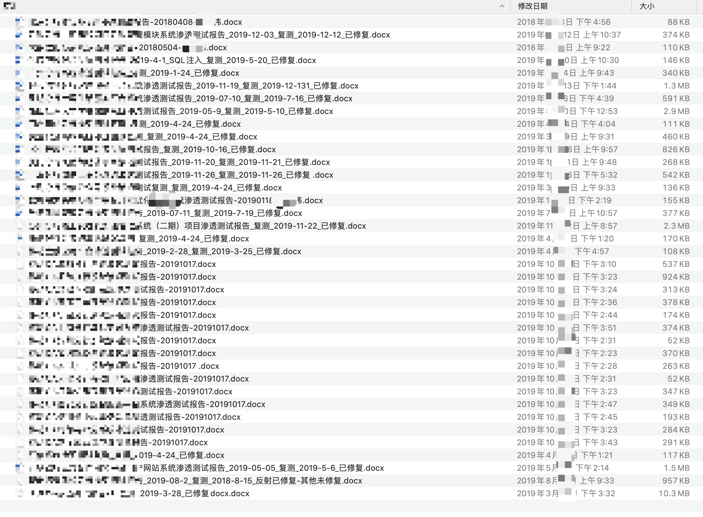
记录文件命名（推荐的方式：2020-03-03-xxxxx项目-xxxx渗透测试记录_v1.0），`时间-项目名称_v版本号`」
如何保存Burp的请求记录
有时候我们在做渗透测试的时候，我们使用burpsuite抓取网络数据包，并且做了刚好一半，但是却要关机（比如说快没电了，或者说因为要外出携带电脑为了电脑号所以要关机等等），在这种情况下，如果你关机，那么所有之前的数据包记录将会变为空，那么如何操作呢
有的就截个图，功能点在哪也不说，复现都找半天，功能点的位置一定要写清楚，也方便自己复测
Burp启动，建议新建项目，然后配置，也保存在渗透项目的文件夹下
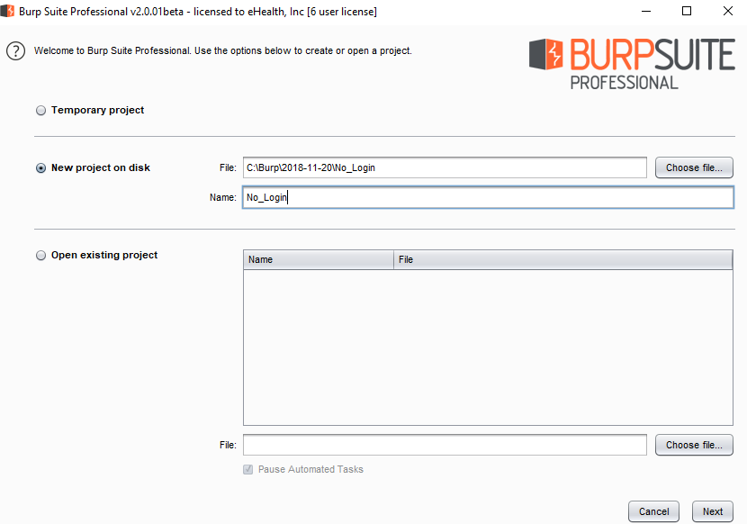
导出和导入Burp的请求
Burp->Save state:
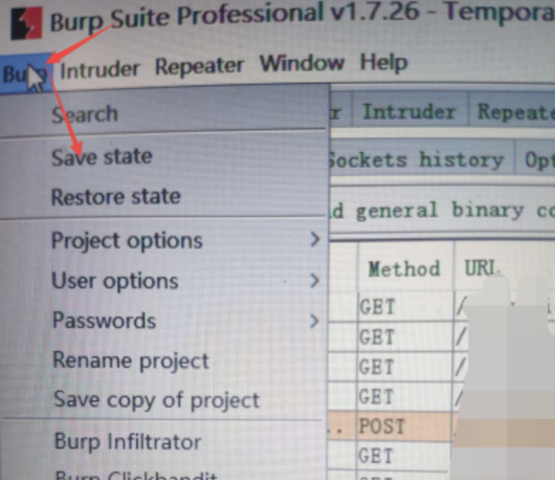
选择想要保存的模块
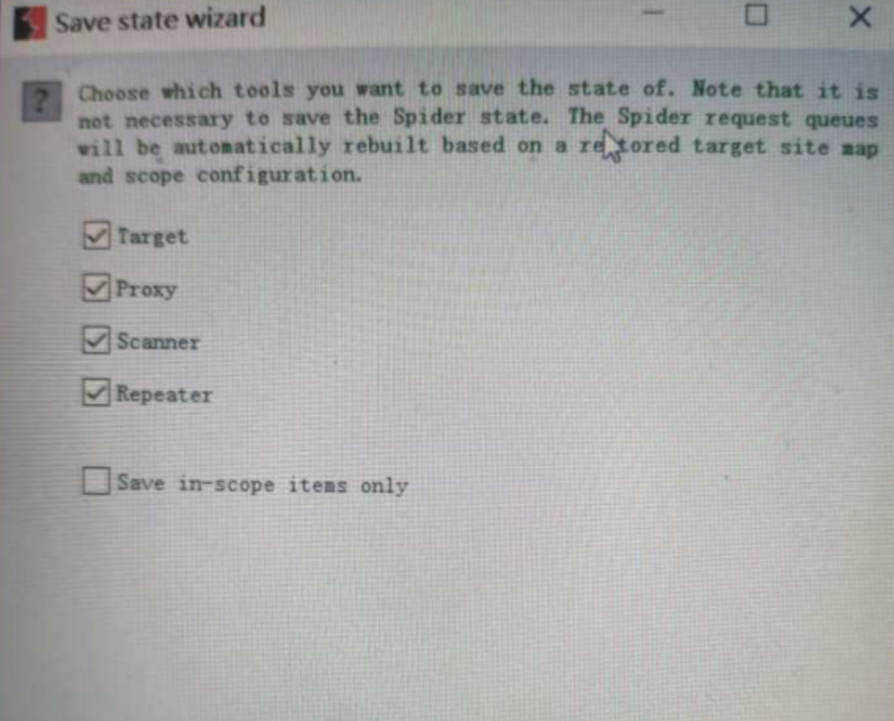
然后下一步下一步即可，再保存文件名
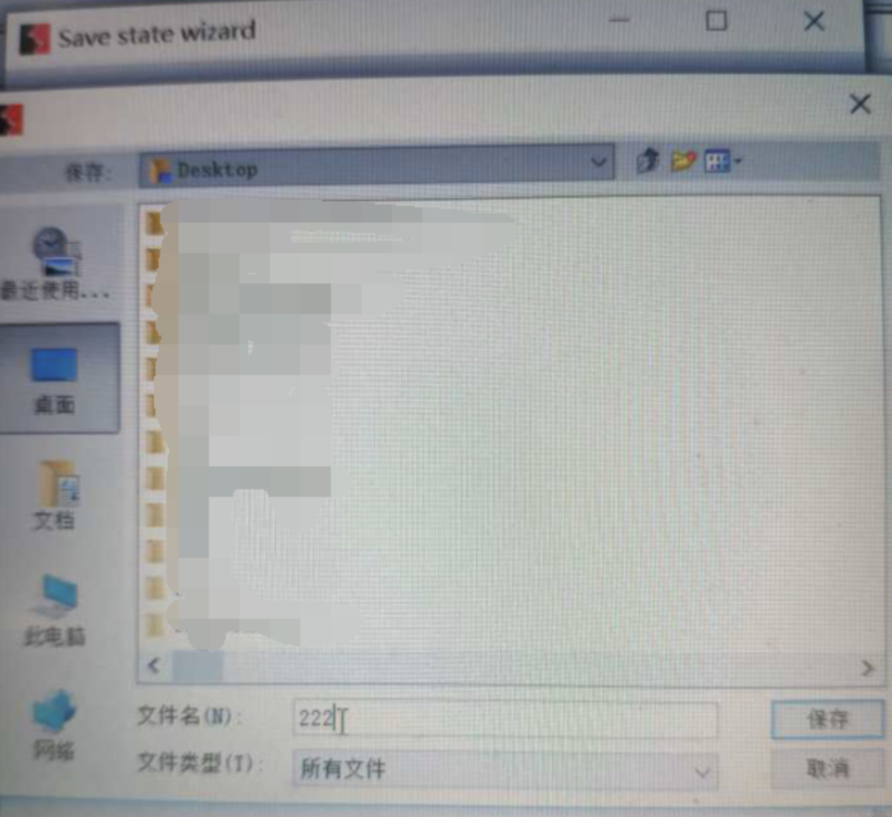
保存成功
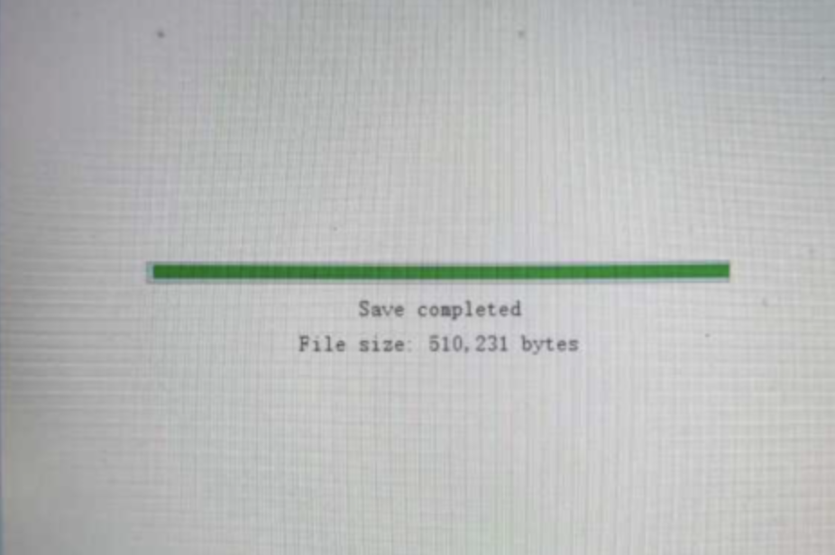
如何导入：
Burp->Restore state
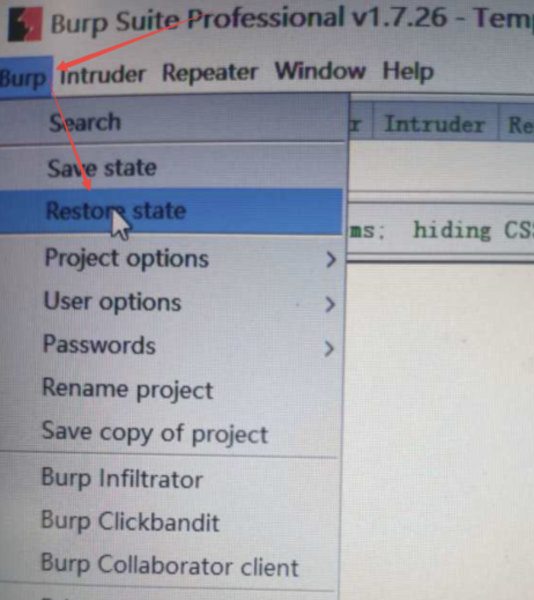
选择文件
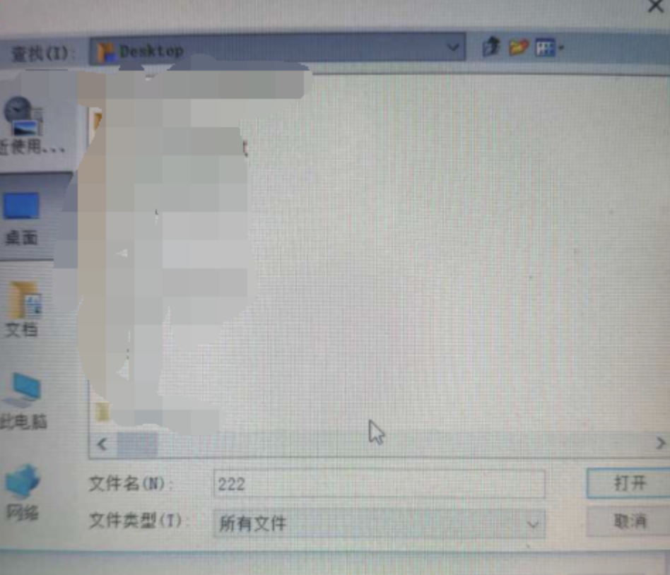
选择要导入的模块
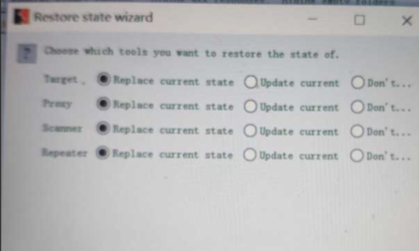
然后就数据都回来了
常用渗透笔记或者软件推荐
Mybase
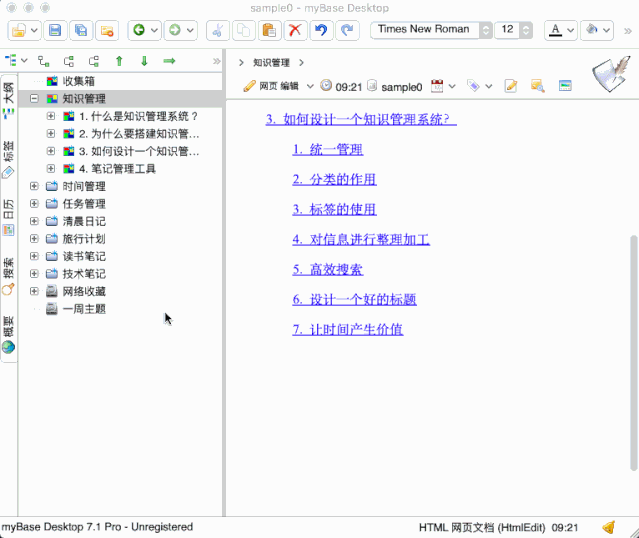
Mybase的使用教程：
https://www.cnblogs.com/d2zs/p/12095889.html
keepnote
在渗透测试过程中，安全人员经常需要记录各种数据，如输出结果、运行截图、测试心得。这类信息格式多样，可能是图片、文字、文件等。为了便于管理这些内容，Kali Linux自带的一款桌面笔记工具KeepNote是。该工具支持富文本格式，可以在文字中添加链接、图片、屏幕截图，甚至是附件。为了便于管理，KeepNote支持层次结构，用户可以按照项目分文件夹归档。同时，该工具支持全文搜索，帮助用户快速找到需要的内容。同时，该工具支持自动保存和备份功能，保证数据的安全可靠。
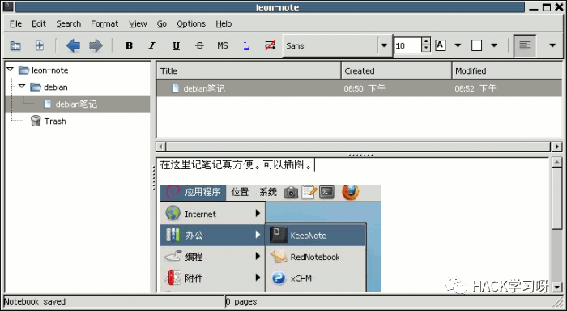
Leanote本地搭建
可以防止云泄露，Web端，以及其他移动平台，可存图片，还有多级分类。
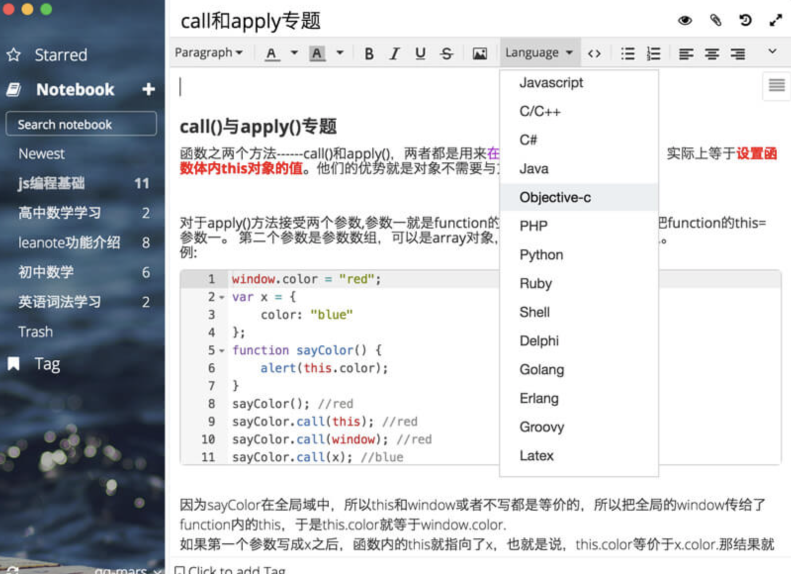
搭建过程：
https://github.com/leanote/leanote/
https://leanote.zzzmh.cn/blog/post/admin/Leanote-蚂蚁笔记-自建私人云服务简单流程-Centos-7.4-2
https://blog.csdn.net/Kerwin_2017/article/details/78540342
onenote


使用：
https://sspai.com/post/46957
最后推荐几个Github上漏洞管理项目
基于django的漏洞资产管理平台
地址：
https://github.com/DefectDojo/django-DefectDojo
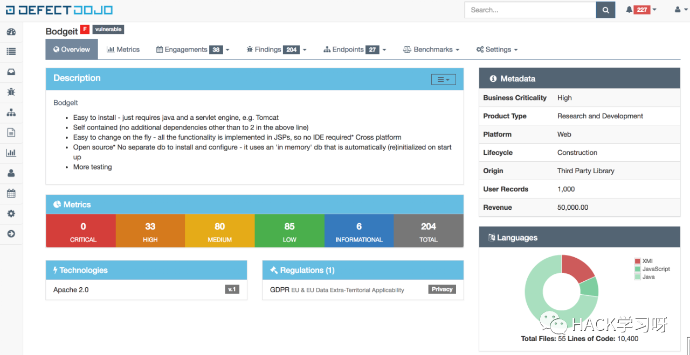
Web界面。宜信安全部开发，集成应用系统资产管理、漏洞全生命周期管理、安全知识库管理三位一体的管理平台
地址：
https://github.com/creditease-sec/insight
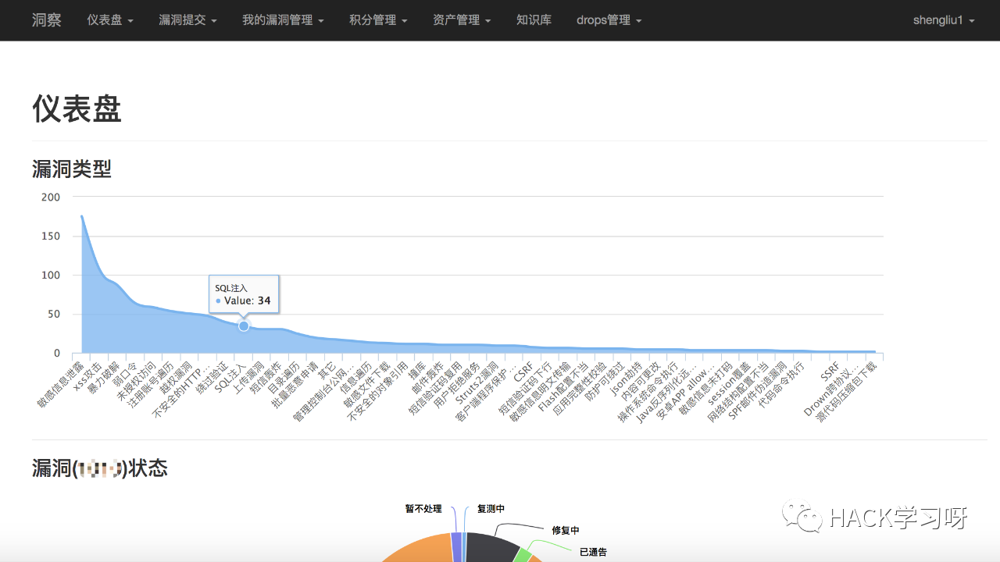
漏洞管理、资产管理、任务扫描系统
地址：
https://github.com/RASSec/A_Scan_Framework
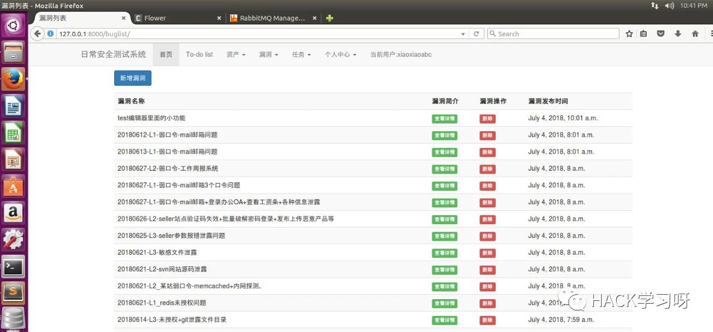
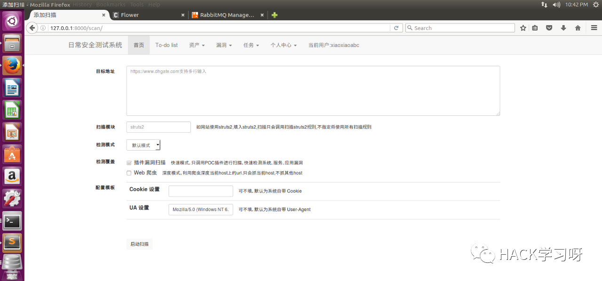
SecurityManageFramwork-SeMF基于django2，包含资产管理，漏洞管理，账号管理，知识库管、安全扫描自动化功能模块，可用于企业内部的安全管理。
地址：
https://github.com/zhaoweiho/SecurityManageFramwork
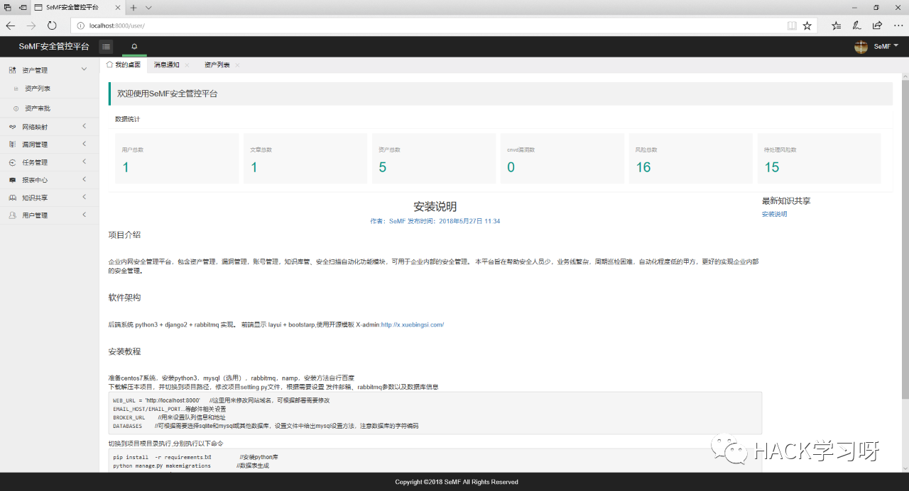

养成良好的项目记录习惯，对自己到进步和学习会很有帮助
可以让你了解自己与其他人的差距
为什么别人信息收集到了你没有收集到，他能爆破进去，而你却不行
多总结多思考，才能进步